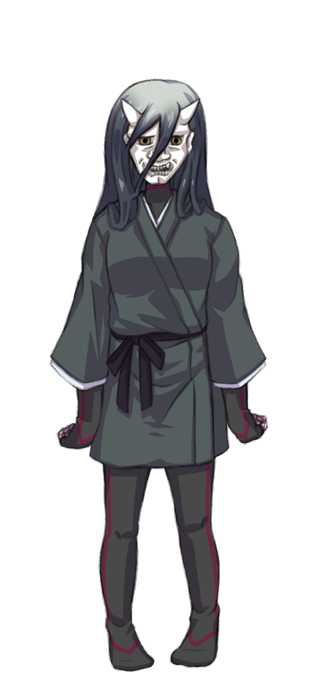
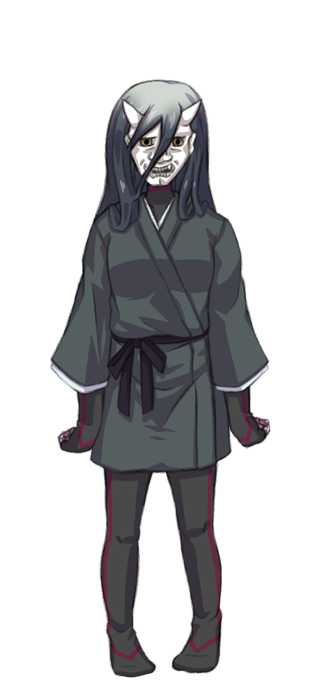

ＰＣの作成手順について解説します。
ＰＣ作成
1 パーソナリティ
まずは、ＰＣの名前や、性別、年齢などを決めます。
『ハレの力を使える』以外に設定の制限は無いので、自由に考えてください。
2 クラス
クラスとは、ハレビトにおける戦いの流派です。
ＰＣは、プライマリクラスとセカンダリクラスの２つのクラスを持ちます。
それぞれ、技能のレベルと、習得できるアーツに影響します。詳しい説明は各項目内でおこないますので、それを見ながら選んでください。
下記のクラスの中から、プライマリクラスとセカンダリクラスを１つずつ選択します。両方とも同じものを選択しても構いません。
カンナギ
ハレビトの中でも、特にハレの力の扱いに長けている者たちです。
《心》の技能に優れます。
味方を強化し、敵を弱体化させる、サポーターです。
カラクリ
様々な道具を使いこなす、技術者たちです。
《技》の技能に優れます。
基本攻撃の性能変化させるアーツや、特定条件で強化される攻撃アーツを持ちます。

アラゴト
戦うこと自体を生業とする者たちです。
《体》の技能に優れます。
射程が短くなる代わりに、高威力の攻撃を繰り出すことができます。


モリビト
大切な何かを守るために戦う者たちです。
技能は、《心》と《体》が高めです。
味方をかばったり、攻撃に耐えたりするアーツが特徴です。


オンミツ
姿を隠し、夜を駆ける、いわゆる忍者です。
技能は、《技》と《体》が高めです。
移動を封じたり、攻撃を無効化したり、行動の妨害を得意としています。
 

センドー
気の力を操る、仙医とも呼ばれる者たちです。
技能は、《心》と《技》が高めです。
攻撃から回復まで、何でも器用にこなすクラスです。

3 技能
ＰＣが持つ行動能力を技能と呼びます。技能には、ライフと、それらに紐づくスキルがあります。
詳しくは、技能を確認してください。
3-1 ライフの習得
ライフのレベルは、プライマリクラスに応じて変わります。
| ライフ | 《心》 | 《技》 | 《体》 |
|---|---|---|---|
| カンナギ | 5 | 3 | 2 |
| カラクリ | 2 | 5 | 3 |
| アラゴト | 3 | 2 | 5 |
| モリビト | 4 | 2 | 4 |
| オンミツ | 2 | 4 | 4 |
| センドー | 4 | 4 | 2 |
3-2 スキルの習得
スキルのレベルは、プライマリクラスとセカンダリクラスに応じて変わります。
２つのクラスのレベルを合計してください。
| スキル | 〈博愛〉 | 〈忍耐〉 | 〈霊感〉 | 〈器用〉 | 〈知性〉 | 〈洞察〉 | 〈威風〉 | 〈反応〉 | 〈迅速〉 |
|---|---|---|---|---|---|---|---|---|---|
| カンナギ | +1 | +2 | +1 | ||||||
| カラクリ | +2 | +1 | +1 | ||||||
| アラゴト | +1 | +2 | +1 | ||||||
| モリビト | +2 | +1 | +1 | ||||||
| オンミツ | +1 | +1 | +2 | ||||||
| センドー | +1 | +1 | +1 | +1 |
3-3 スキルの自由習得
プライマリクラスとセカンダリクラスが同一の場合は『４』レベル分、そうでない場合は『３』レベル分のスキルを追加で習得します。
ただし、各スキルのレベルは『５』までです。
4 アーツ
ハレビトたちの戦いの技、それがアーツです。ハラエフェイズにて、ケガレビトに対抗するための手段となります。
アーツにはあえて厳密なイメージは設定していません。あなたが「このアーツはこういうものなんだ！」と説明できるのなら、それがあなただけのアーツになります。
ある意味でアーツはＰＣを特徴づけるアクセサリーとも言えるでしょう。自分だけのアーツ構成で、キャラクターの個性を際立たせましょう。もちろん、ゲーム的な強さを求めて選択するのも、やり方の一つです。
4-1 基本攻撃アーツの習得
基本攻撃アーツは、ハレビトたちがケガレビトとの戦いで用いる武器、あるいは戦闘スタイルそのものを指します。
それは、剣や槍、弓矢や銃などの文字通りの武器だったり、傘や鉄パイプといった身近にある物だったり、炎や雷などの形の無いものだったり、心に訴えかける巧みな話術だったり……、ハレビトの攻撃方法は実に様々です。
基本攻撃アーツには、【近距離武器】と【遠距離武器】の２つがあります。キャラクターのイメージに合うものを選んで習得してください。なお、ここではどちらか１つしか修得できませんが、『4-3アーツの自由習得』にてもう片方を習得することも可能です。
基本攻撃アーツを１つ習得します。
技能は、習得時に任意のものを設定できます。セッション中に変更することはできないので、注意してください。
4-2 プライマリクラスのアーツの習得
プライマリクラスのアーツを１つ習得します。
4-3 アーツの自由習得
汎用カテゴリー（基本攻撃・共通）と、プライマリクラス・セカンダリクラスのアーツの中から、合計で３つ習得します。